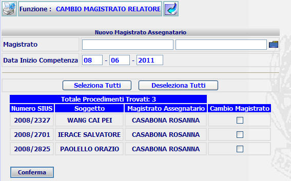
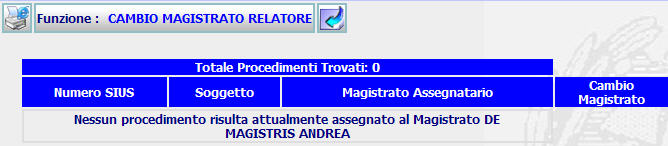
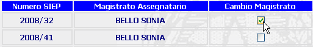

Per tornare alla maschera precedente, Elenco procedimenti assegnati, l'utente deve:
CAMBIO MAGISTRATO RELATORE: La funzione consente sia di visualizzare i procedimenti assegnati al magistrato sia di modificare, per un determinato procedimento, il Magistrato assegnatario.
LE MASCHERE VIDEO
La funzione in esame, viene realizzata attraverso l'utilizzo della maschera che segue.

N.B. Se non risultano assegnati procedimenti al Magistrato selezionato nella funzione Elenco procedimenti assegnati, verrà visualizzata la maschera seguente:

COME FARE PER ...
|
Per tornare alla maschera precedente, Elenco procedimenti assegnati, l'utente deve: |
Cliccare sul pulsante
; si aprirà la maschera corrispondente alla funzione precedente.
| Per assegnare uno o più procedimenti ad altro Magistrato, l'utente deve: |
Selezionare tramite la lista predefinita
il magistrato prescelto cliccando sulla cartellina blu con il segno di spunta bianco
ed eventualmente inserendo uno o più caratteri nel filtro per individuare un sottoinsieme:
Modificare la data di inizio competenza se diversa dalla data corrente;
Selezionare uno o più procedimenti tramite la casella di spunta

Nel caso che si volessero selezionare tutti i procedimenti basterà agire sul pulsante ; Per deselezionare invece tutti i procedimenti selezionati, basterà agire sul pulsante ;
Confermare i dati inseriti nella maschera agendo sul bottone
. A fronte di questa operazione viene visualizzata la scheda di Esito Cambio Magistrato RELATORE.
CAMPI
I dati che consentono di ricercare i procedimenti sono i seguenti:
| NOME | DESCRIZIONE |
| Cognome Magistrato* | campo non editabile; Selezionare dalla lista |
| Nome Magistrato* | campo non editabile; |
| Data Inizio Competenza | Compilare il campo data nel formato gg/mm/aaaa. Risulta già precompilata con la data attuale; |
PULSANTI
Oltre ai pulsanti
 e
e
 facenti parte del gruppo di
pulsanti di "Uso Comune"
ed ai
pulsanti orizzontali dell'area
di navigazione è
presente il seguente pulsante:
facenti parte del gruppo di
pulsanti di "Uso Comune"
ed ai
pulsanti orizzontali dell'area
di navigazione è
presente il seguente pulsante:
|
PULSANTE |
DESCRIZIONE |
|
|
A fronte di tale comando, il sistema visualizza la lista predefinita. |
BOTTONI
Oltre ai comandi funzionali relativi al menù verticale sono presenti i seguenti comandi:
|
COMANDI |
DESCRIZIONE |
|
|
A fronte di tale comando viene visualizzata la scheda di Esito Cambio Magistrato RELATORE.. |
CONTROLLI
A fronte
della pressione del bottone
 , il sistema
verifica la correttezza dei dati e visualizza un messaggio di errore nel caso che:
, il sistema
verifica la correttezza dei dati e visualizza un messaggio di errore nel caso che:
i campi obbligatori, COGNOME, NOME del Magistrato non risultino inseriti:
non si è selezionato alcun procedimento:
Se il sistema non riscontrerà incongruenze verrà visualizzata la scheda della funzione di Esito Cambio Magistrato RELATORE.